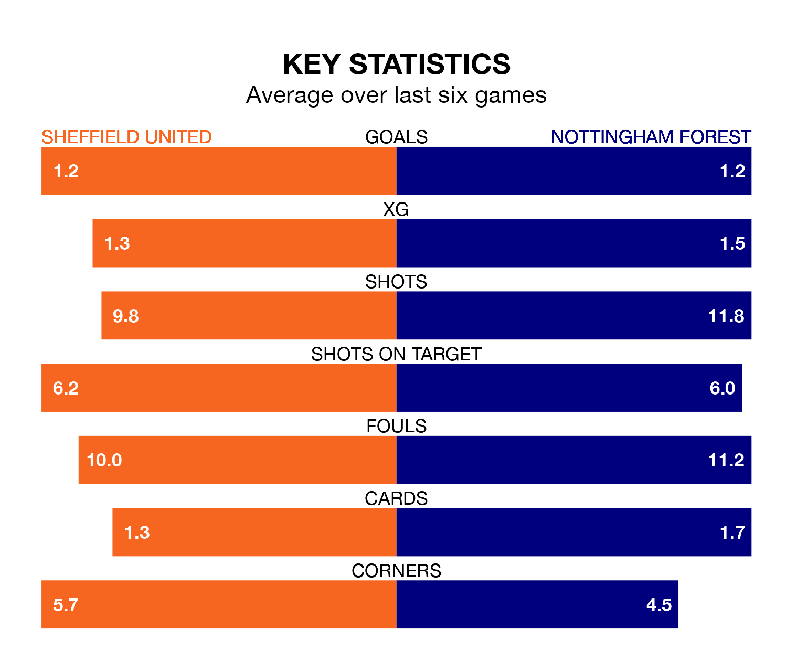

Saturday's match at Bramall Lane sees two relegation candidates play each other, as bottom of the table Sheffield United host 17th-placed Nottingham Forest.
United have picked up 16 points from their first 16 Premier League games, with three wins and seven draws.
That is 14 points less than the Tricky Trees have collected, having won seven and drawn nine.
United are in terrible form in the Premier League, with no wins and a draw from their last six games.
With a win and two draws over that period, Forest's form is better – they have taken five points from 18, compared to the Blades's one.
In the last 10 years, United and Forest have played each other on nine occasions. United won two of them, Forest four, and they drew three times.
On average, the Blades scored 1.0 goal and the Tricky Trees 1.1 in those matches.
Their last meeting was on August 18, when Forest won 2-1 at home.
With 34 goals in 35 games so far this season, the home side are the league's lowest scorers with 1.0 goals per game. And they are conceding more than average, letting in 97 goals at a rate of 2.8 per game.
The Tricky Trees are also below average scorers, with 1.2 goals per game, compared to a league average of 1.6. They have conceded 1.8 goals per game.
United's last match was on April 27, a 5-1 loss against Newcastle United, with Anel Ahmedhodzic getting the goal for the Blades.
Forest lost 2-0 against Manchester City last time out, on Sunday.
Updated: 10:44 (UTC), 30/04/24